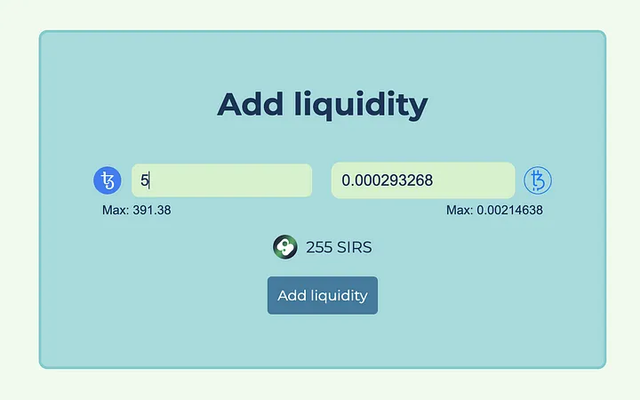

Creating a Simple dApp on Tezos
Creating a Simple dApp on Tezos
In this tutorial, you will discover how to configure and establish a decentralized web application on Tezos. Together, we will fabricate an interface for the Liquidity Baking smart contract that will enable us to engage with this DEX and execute various tasks, such as exchanging tokens or delivering liquidity. Concurrently, you will be familiarized with fundamental concepts involved in creating a decentralized application, not only generally, but also particularly on Tezos.
Since the dapp will be created using TypeScript, a comprehensive understanding of this programming language is essential. To develop the application, we will employ the Svelte framework, which is fairly intuitive to use and I will provide explanations throughout the process.
Like 99% of the dapps in the ecosystem, this dapp will depend on Taquito, a TypeScript library that guarantees a superior developer experience when interacting with the Tezos blockchain.
The Liquidity Baking contract
Tezos boasts a remarkable contract that’s exclusively designed for decentralized exchange (DEX), called the Liquidity Baking contract. This DEX manages only three tokens: XTZ (the native token of Tezos), tzBTC (a wrapped token for Bitcoin on Tezos), and SIRS (the token that denotes an equal liquidity amount in XTZ and tzBTC supplied to the contract).
This contract holds a unique attribute, that is, each time a new block is baked on Tezos, 2.5 XTZ are injected into the contract. Users are anticipated to bring in tzBTC to maintain the DEX liquidity balance and the SIRS price stability.
Moreover, the contract is entirely public, enabling anyone with a Tezos wallet to interact with it for exchanging XTZ for tzBTC and vice-versa, adding or removing liquidity. And this is what we’ll be accomplishing together in this tutorial.
What are we going to build?
In this tutorial, we will build a dapp interface that interacts with the LB contract to swap tokens, add liquidity and remove it.
- Displaying users’ information like their XTZ, tzBTC, and SIRS balance and update them after each transaction.
- Connecting and disconnecting the users’ wallet.
- Displaying wallet information like its connection status and the network it’s connected to.
- Displaying different interfaces to swap tokens, add and remove liquidity.
- Allowing users to swap XTZ for tzBTC and tzBTC for XTZ.
- Allowing users to add liquidity by providing XTZ and tzBTC and getting SIRS in exchange.
- Allowing users to remove liquidity, i.e. to redeem SIRS tokens and get XTZ and tzBTC tokens in exchange.
Take a look at this flow chart to visual the flow of actions in dapp:
+-----------------------+
| |
| Main Dashboard |
| |
+-----------------------+
|
| Wallet Connection
|
+-----------------------+
| |
| Wallet Information |
| |
+-----------------------+
|
| Token Swap or Liquidity Provision/Removal
|
+-----------------------+
| |
| Tezos Blockchain |
| |
+-----------------------+
|
| Transaction Execution
|
+-----------------------+
| |
| Balance Update |
| |
+-----------------------+
|
| Wallet Disconnection
|
+-----------------------+
| |
| End of Transaction |
| |
+-----------------------+
Before we dive into creating the decentralized web application, the GitHub repository for this project is available for you to access, if you want to play around. You can find it here. With that said, let’s move forward and start building our application step-by-step.
Pre-requisites
What tools are we going to use?
Before diving into building our decentralized application, it’s essential to have a solid understanding of the tools we’ll be using to develop it. As this app is a web application, we’ll be utilizing the following tools:
-
Svelte: A JavaScript framework that enables us to build performant web applications with ease.
-
TypeScript: A superset of JavaScript that makes our code more reliable and expressive.
-
Sass: A CSS preprocessor that enables us to write maintainable and scalable CSS code.
-
Vite: A modern build tool that is used for fast and efficient application bundling.
-
Taquito: A TypeScript library that provides a better developer experience for interacting with the Tezos blockchain.
-
Beacon: A wrapper library provided by Taquito to use a Tezos wallet.
Having a good grasp of these tools is crucial to developing a successful decentralized application on Tezos.
Setting up the dapp
As we are building a web app with the Svelte framework, the steps to set up the project will be very similar to the ones you would follow to set up any other web app.
In this tutorial, we will make a Svelte SPA, so we won’t need SvelteKit, which will also make our life easier.
- The first thing to do is to install Svelte with TypeScript and Vite:
npm create vite@latest app -- --template svelte-ts
cd lb-dex
npm install
- Next, we will install all the dependencies we need for the dapp:
npm install --save-dev sass
npm install @taquito/taquito @taquito/beacon-wallet
Sass is a development-only dependency, @taquito/taquito is the NPM package for the Taquito library and @taquito/beacon-wallet is the NPM package that contains Beacon with some little configuration to make it easier to plug into Taquito.
- There are a couple of other libraries we need to install:
npm install --save-dev buffer events vite-compatible-readable-stream
These libraries are required to be able to run Beacon in a Svelte app. We will see down below how to use them. Once everything has been installed, we have to set up the right configuration.
- In your app folder, you will see the
vite.config.jsfile, it’s the file that contains the configuration that Vite needs to run and bundle your app. Make the following changes:
import { defineConfig, mergeConfig } from "vite";
import path from "path";
import { svelte } from "@sveltejs/vite-plugin-svelte";
export default ({ command }) => {
const isBuild = command === "build";
return defineConfig({
plugins: [svelte()],
define: {
global: {}
},
build: {
target: "esnext",
commonjsOptions: {
transformMixedEsModules: true
}
},
server: {
port: 4000
},
resolve: {
alias: {
"@airgap/beacon-sdk": path.resolve(
path.resolve(),
`./node_modules/@airgap/beacon-sdk/dist/${
isBuild ? "esm" : "cjs"
}/index.js`
),
// polyfills
"readable-stream": "vite-compatible-readable-stream",
stream: "vite-compatible-readable-stream"
}
}
});
};
Here are a few changes we made to the template configuration given by Vite:
- We set
globalto{}and we will later provide the global object in our HTML file. - We provide a path to the Beacon SDK.
- We provide polyfills for
readable-streamandstream.
- Once these changes have been done, there is a last step to finish setting up the project: we have to update the HTML file where the JavaScript code will be injected.
Inside the index.html file, you should have the following:
<!DOCTYPE html>
<html lang="en">
<head>
<meta charset="UTF-8" />
<link rel="icon" href="/favicon.ico" />
<meta name="viewport" content="width=device-width, initial-scale=1.0" />
<script>
const global = globalThis;
</script>
<script type="module">
import { Buffer } from "buffer";
window.Buffer = Buffer;
</script>
<title>Liquidity Baking DEX</title>
</head>
<body>
<script type="module" src="/src/main.ts"></script>
</body>
</html>
- In the first script tag, we set the global variable to globalThis.
- In the second script tag with a module type, we import Buffer from the buffer library and add it to the window global object.
This configuration is required to run the Beacon SDK with a Vite app. Taquito works completely out of the box and doesn’t require any settings.
- Once we updated the configuration in the
vite.config.jsfile and in theindex.htmlfile, our project is successfully set up!
Run the following in your terminal at the root of the project to check that everything works properly:
npm run dev
VITE v4.2.1 ready in 680 ms
➜ Local: http://localhost:4000/
➜ Network: use –host to expose
➜ press h to show help
File Structure
The entrypoint of every Svelte app is a file called App.svelte, this is where you will import all your components to be bundled together into your final app. If you haven’t done so, create the folders and files n eccessary for this tutorial so the file structure of our project looks like this:
├── src/
│ ├── assets/
│ │ └── svelte.png
│ ├── lib/
│ │ ├── AddLiquidityView.svelte
│ │ ├── Interface.svelte
│ │ ├── RemoveLiquidity.svelte
│ │ ├── Sidebar.svelte
│ │ ├── SirsStats.svelte
│ │ ├── SwapView.svelte
│ │ ├── Toast.svelte
│ │ ├── UserInput.svelte
│ │ ├── UserStats.svelte
│ │ └── Wallet.svelte
│ ├── styles/
│ │ ├── index.scss
│ │ └── settings.scss
│ ├── App.svelte
│ ├── config.ts
│ ├── lbUtils.ts
│ ├── main.ts
│ ├── store.ts
│ ├── types.ts
│ └── utils.ts
├── index.html
├── svelte.config.js
├── tsconfig.json
└── vite.config.js
- assets: contains the favicon (here, this is the default Svelte favicon, but you can choose another one)
- lib: contains the different components that will make up our interface, here is what each does:
SwapView.svelte: the interface to swap XTZ and tzBTC tokensAddLiquidityView.svelte: the interface to add liquidity to the LB DEXRemoveLiquidity.svelte: the interface to remove liquidity from the LB DEXInterface.svelte: the higher-order component to hold the different views to interact with the LB DEXSidebar.svelte: the component to navigate between the different interfaces and to connect or disconnect the walletSirsStats.svelte: the component to display the amount of XTZ, tzBTC, and SIRS present in the contractToast.svelte: a simple component to display the progression of the transactions and other messages when interacting with the contractUserInput.svelte: a utility component to make it easier to interact and control input fieldsUserStats.svelte: the component to display the user’s balance in XTZ, tzBTC, and SIRSWallet.svelte: the component to manage wallet interactions
- styles: contains the SASS files to style different elements of our interface
- App.svelte: the entrypoint of the application
- config.ts: different immutable values needed for the application and saved in a separate file for convenience
- lbUtils.ts: different methods to calculate values needed to interact with the Liquidity Baking contract
- main.ts: this is where the JavaScript for the app is bundled before being injected into the HTML file
- store.ts: a file with a Svelte store to handle the dapp state
- types.ts: custom TypeScript types
- utils.ts: different utility methods
import App from './App.svelte'
import "./styles/index.scss";
const app = new App({
target: document.body
});
export default app;
We recommend targetting the body tag to inject the HTML produced by JavaScript instead of a div inside the body.
- Check the
App.sveltefile looks something like this:
<script lang="ts">
... your TypeScript code
</script>
<style lang="scss">
... your SASS code
</style>
... your HTML code
Svelte components are fully contained, which means that the style that you apply inside a component doesn’t leak into the other components of your app. The style that we want to share among different components will be written in the index.scss file.
There is a script tag with a lang attribute set to ts for TypeScript, a style tag with a lang attribute set to scss for SASS and the rest of the code in the file will be interpreted as HTML.
Configuring the dapp
- Let’s set up things differently in our
App.sveltefile.
The HTML part is just going to put all the higher-order components together. Replace the HTML with the following:
<main>
<Toast />
{#if $store.Tezos && $store.dexInfo}
<Sidebar />
<Interface />
{:else}
<div>Loading</div>
{/if}
</main>
The interface will change after different elements are available to the dapp, mostly, the data about the liquidity pools from the liquidity baking contract.
- Replace the SASS part of the file with the following:
@import "./styles/settings.scss";
main {
display: grid;
grid-template-columns: 250px 1fr;
gap: $padding;
padding: $padding;
height: calc(100% - (#{$padding} * 2));
}
@media screen and (max-height: 700px) {
main {
padding: 0px;
height: 100%;
}
}
- For TypeScript part import the libraries and components we need inside the
<script>tag:
import { onMount } from "svelte";
import { TezosToolkit } from "@taquito/taquito";
import store from "./store";
import { rpcUrl, dexAddress } from "./config";
import Sidebar from "./lib/Sidebar.svelte";
import Interface from "./lib/Interface.svelte";
import Toast from "./lib/Toast.svelte";
import type { Storage } from "./types";
import { fetchExchangeRates } from "./utils";
onMountis a method exported by Svelte that will run some code when the component mounts (more on that below)TezosToolkitis the class that gives you access to all the features of Taquitostoreis a Svelte feature to manage the state of the dapp- From the
config.tsfile, we importrpcUrl(the URL of the Tezos RPC node) anddexAddress, the address of the Liquidity Baking contract Storageis a custom type that represents the signature type of the LB DEX storagefetchExchangeRatesis a function to fetch the exchange rates of XTZ and tzBTC (more on that below)
- Additionally include the
onMountto set up the state of the dapp also inside the<script>tag after the imprted librarires and components:
onMount(async () => {
const Tezos = new TezosToolkit(rpcUrl);
store.updateTezos(Tezos);
const contract = await Tezos.wallet.at(dexAddress);
const storage: Storage | undefined = await contract.storage();
if (storage) {
store.updateDexInfo({ ...storage });
}
// fetches XTZ and tzBTC prices
const res = await fetchExchangeRates();
if (res) {
store.updateExchangeRates([
{ token: "XTZ", exchangeRate: res.xtzPrice },
{ token: "tzBTC", exchangeRate: res.tzbtcPrice }
]);
} else {
store.updateExchangeRates([
{ token: "XTZ", exchangeRate: null },
{ token: "tzBTC", exchangeRate: null }
]);
}
});
The first thing to do is to create an instance of the TezosToolkit by passing the URL of the RPC node we want to interact with. In general, you want to have a single instance of the TezosToolkit in order to keep the same configuration across all your app components, this is why we save it in the store with the updateTezos method.
After that, we want to fetch the storage of the LB DEX to get the amounts of XTZ, tzBTC, and SIRS in the contract. We create a ContractAbstraction, an instance provided by Taquito with different properties and methods that are useful to work with Tezos smart contracts. From the ContractAbstraction, we can call the storage method that returns a JavaScript object that represents the storage of the given contract. We then pass the storage to the updateDexInfo method present on the store to update this data and display them to the user.
- To finish this part of the tutorial, we need to fetch the exchange rates for XTZ and tzBTC to make the conversions required by this kind of app.
Inside the utils.ts file, paste the folllowing function:
export const fetchExchangeRates = async (): Promise<{
tzbtcPrice: number;
xtzPrice: number;
} | null> => {
const query = `
query {
overview { xtzUsdQuote },
token(id: "KT1PWx2mnDueood7fEmfbBDKx1D9BAnnXitn") { price }
}
`;
const res = await fetch(`https://analytics-api.quipuswap.com/graphql`, {
method: "POST",
headers: {
"Content-Type": "application/json"
},
body: JSON.stringify({
query
})
});
if (res.status === 200) {
const resData = await res.json();
let xtzPrice = resData?.data?.overview?.xtzUsdQuote;
let tzbtcPrice = resData?.data?.token?.price;
// validates the 2 values
if (xtzPrice && tzbtcPrice) {
xtzPrice = +xtzPrice;
tzbtcPrice = +tzbtcPrice;
if (!isNaN(xtzPrice) && !isNaN(tzbtcPrice)) {
// tzBTC price is given in XTZ by the API
tzbtcPrice = tzbtcPrice * xtzPrice;
return { tzbtcPrice, xtzPrice };
}
} else {
return null;
}
} else {
return null;
}
};
The exchange rates required for the DEX are obtained by utilizing the QuipuSwap GraphQL API. Upon receiving the exchange rates, we parse the response to validate the prices offered for XTZ and tzBTC. Following successful validation, the function returns the confirmed prices which can then be stored. The exchange rates are instrumental in calculating the total value locked in the contract, denominated in USD or other fiat currencies.
Wallet and user’s tokens
Setting up the wallet
The wallet is a key element of your dapp, without it, the users won’t be able to interact with the Tezos blockchain, which defeats your purpose. There are multiple considerations to take into account when you are setting up the wallet that we will explain below.
- Make sure the
Wallet.sveltefile looks something like this:
<script lang="ts">
... your TypeScript code
</script>
<style lang="scss">
... your SASS code
</style>
... your HTML code
Import the following libraries and components inside the <script> tag:
import { onMount } from "svelte";
import { BeaconWallet } from "@taquito/beacon-wallet";
import store, { type TezosAccountAddress } from "../store";
import { rpcUrl, network } from "../config";
import { shortenHash, fetchBalances } from "../utils";
Below this, also declare these variables:
let connectedNetwork = "";
let walletIcon = "";
let walletName = "";
connectedNetwork: Used to store the name or identifier of a network that a user is currently connected to.walletIcon: Used to store the file path or URL of an icon or logo that represents a user’s wallet.walletName: Used to store the name or identifier of a wallet that a user is currently using.
Also don’t forget to include the onMount function we created previous and the end of the <script>.
- We want to isolate the wallet and its different interactions and values in the same component, called
Wallet.sveltein our example. When using the Beacon SDK, it is crucial to keep a single instance of Beacon running in order to prevent bugs.
Add the following inside the <script> tag:
onMount(async () => {
const wallet = new BeaconWallet({
name: "Tezos dev portal dapp tutorial",
preferredNetwork: network
});
store.updateWallet(wallet);
const activeAccount = await wallet.client.getActiveAccount();
if (activeAccount) {
const userAddress = (await wallet.getPKH()) as TezosAccountAddress;
store.updateUserAddress(userAddress);
$store.Tezos.setWalletProvider(wallet);
await getWalletInfo(wallet);
// fetches user's XTZ, tzBTC and SIRS balances
const res = await fetchBalances($store.Tezos, userAddress);
if (res) {
store.updateUserBalance("XTZ", res.xtzBalance);
store.updateUserBalance("tzBTC", res.tzbtcBalance);
store.updateUserBalance("SIRS", res.sirsBalance);
} else {
store.updateUserBalance("XTZ", null);
store.updateUserBalance("tzBTC", null);
store.updateUserBalance("SIRS", null);
}
}
});
We create the instance of the BeaconWallet by providing a name for the dapp (it can be whatever you want) that will be displayed in the wallet UI and the network you want to connect to (imported from the config file). The instance of the wallet is then saved in the store.
Now, you want to check if the user connected a wallet before. Beacon will keep track of live connections in the local storage, this is how your users can navigate to your dapp and have their wallet connected automagically!
The BeaconWallet instance provides a client property with different methods, the one you need here is getActiveAccount(), which will retrieve any live connection stored in the local storage. If there is a live connection, you can fetch the user’s address and save it into the store, update the store with the user’s address before setting up the wallet as the signer with $store.Tezos.setWalletProvider(wallet), get the information you need about the wallet (mainly, the name of the wallet) with the getWalletInfo() function and then, fetch the balances for the address that is connected with the fetchBalances() function described earlier.
Once the balances are fetched, they are saved into the store to be displayed in the interface.
TezosAccountAddress is a custom type I like to use to validate Tezos addresses for implicit accounts: type TezosAccountAddress = tz${"1" | "2" | "3"}${string}, TypeScript will raise a warning if you try to use a string that doesn’t match this pattern.
Connecting the wallet
Taquito and Beacon working in unison makes it very easy to connect the wallet.
- By adding a few lines of code so it looks like this:
const connectWallet = async () => {
if (!$store.wallet) {
const wallet = new BeaconWallet({
name: "Tezos dev portal dapp tutorial",
preferredNetwork: network
});
store.updateWallet(wallet);
}
await $store.wallet.requestPermissions({
network: { type: network, rpcUrl }
});
const userAddress = (await $store.wallet.getPKH()) as TezosAccountAddress;
store.updateUserAddress(userAddress);
$store.Tezos.setWalletProvider($store.wallet);
// finds account info
await getWalletInfo($store.wallet);
// fetches user's XTZ, tzBTC and SIRS balances
const res = await fetchBalances($store.Tezos, userAddress);
if (res) {
store.updateUserBalance("XTZ", res.xtzBalance);
store.updateUserBalance("tzBTC", res.tzbtcBalance);
store.updateUserBalance("SIRS", res.sirsBalance);
} else {
store.updateUserBalance("XTZ", null);
store.updateUserBalance("tzBTC", null);
store.updateUserBalance("SIRS", null);
}
};
The connection will be handled in a specific function called connectWallet. If the store doesn’t hold an instance of the BeaconWallet (if the dapp didn’t detect any live connection on mount), you create that instance and save it in the store.
Next, you ask the user to select a wallet with the requestPermissions() method present on the instance of the BeaconWallet. The parameter is an object where you indicate the network you want to connect to as well as the URL of the Tezos RPC node you will interact with.
After the user selects a wallet to use with our dapp, you get their address with the getPKH() method on the BeaconWallet instance, you update the signer in the TezosToolkit instance by passing the wallet instance to setWalletProvider(), you get the information you need from the wallet and you fetch the user’s balances.
Now, the wallet is connected and the user is shown their different balances, as well as a connection status in the sidebar!
No matter how you decide to design your dapp, it is crucial to maintain only one instance of the BeaconWallet, and it is strongly advised to do the same with the instance of the TezosToolkit. If you create multiple instances, it can lead to complications with the state of your application and cause issues with Taquito overall.
Disconnecting the wallet
Disconnecting the wallet is as important as connecting it. A lot of users have multiple wallets and addresses within the same wallet that they want to use to interact with your dapp.
Therefore adding the following code inside the <script> tag after our connectWallet funcctionlity will ensure this making it easier:
const disconnectWallet = async () => {
$store.wallet.client.clearActiveAccount();
store.updateWallet(undefined);
store.updateUserAddress(undefined);
connectedNetwork = "";
walletIcon = "";
};
There are different steps to disconnect the wallet and reset the state of the dapp:
$store.wallet.client.clearActiveAccount(): Terminates the current connection to Beacon.store.updateWallet(undefined): Removes the wallet from the state in order to trigger a reload of the interface.store.updateUserAddress(undefined): Removes the current user’s address from the state to update the UI.connectedNetwork = ""; walletIcon = "": needed to reset the state of the dapp and present an interface where no wallet is connected.
The call to clearActiveAccount() on the wallet instance is the only thing that you will do in whatever dapp you are building, it will remove all the data in the local storage and when your user revisits your dapp, they won’t be automatically connected with their wallet.
-
Avoid prompting users to connect their wallet immediately after the dapp loads. Provide information about your dapp and a clear, prominently displayed button for users to manually connect their wallet.
-
Ensure the button to connect a wallet stands out in your interface and is easy to locate.
-
Keep the button in a predictable position, such as the top-left or top-right of the UI, to avoid user confusion.
-
Use clear and concise language for the button text, such as “Connect.” Display the wallet status, network, and balance to keep users informed.
-
Enable/disable interactions that depend on a connected wallet to prevent user confusion.
Fetching user’s balances
Fetching and displaying user balances is crucial in a dapp, and should not be overlooked. To ensure balances are shown and updated correctly, create a function in the utils.ts file and import it where necessary. In order to fetch balances, we use Taquito for XTZ and the TzKT API for tzBTC and SIRS. TzKT is a useful tool for building more complex applications on Tezos.
- Import the following to the top the
utils.ts:
import BigNumber from "bignumber.js";
import type { TezosToolkit } from "@taquito/taquito";
import type { token } from "./types";
import type { TezosAccountAddress } from "./store";
import { tzbtcAddress, sirsAddress } from "./config";
- Then add the function
fetchBalances:
export const fetchBalances = async (
Tezos: TezosToolkit,
userAddress: TezosAccountAddress
): Promise<{
xtzBalance: number;
tzbtcBalance: number;
sirsBalance: number;
} | null> => {
try {
// the code will be here
} catch (error) {
console.error(error);
return null;
}
}
The fetchBalances function will take 2 parameters: An instance of the TezosToolkit to fetch the user’s XTZ balance and the user’s address to retrieve the balances that match the address. It will return an object with 3 properties: xtzBalance, tzbtcBalance, and sirsBalance or null if any error occurs.
- Inisde the
tryadd the following:
const xtzBalance = await Tezos.tz.getBalance(userAddress);
if (!xtzBalance) throw "Unable to fetch XTZ balance";
The instance of the TezosToolkit includes a property called tz that allows different Tezos-specific actions, one of them is about fetching the balance of an account by its address through the getBalance() method that takes the address of the account as a parameter.
Next, you check for the existence of a balance and you reject the promise if it doesn’t exist. If it does, the balance will be available as a BigNumber.
Taquito returns numeric values from the blockchain as BigNumber, because some values could be very big numbers and JavaScript is notorious for being bad at handling large numbers
- Once the XTZ balance has been fetched, we can continue and fetch the balances using the following:
import { tzbtcAddress, sirsAddress } from "./config";
// previous code for the function
const res = await fetch(
`https://api.tzkt.io/v1/tokens/balances?account=${userAddress}&token.contract.in=${tzbtcAddress},${sirsAddress}`
);
if (res.status === 200) {
const data = await res.json();
if (Array.isArray(data) && data.length === 2) {
const tzbtcBalance = +data[0].balance;
const sirsBalance = +data[1].balance;
if (!isNaN(tzbtcBalance) && !isNaN(sirsBalance)) {
return {
xtzBalance: xtzBalance.toNumber(),
tzbtcBalance,
sirsBalance
};
} else {
return null;
}
}
} else {
throw "Unable to fetch tzBTC and SIRS balances";
}
This link to get more details about how to fetch token balances with the TzKT API. It’s a simple fetch with a URL that is built dynamically to include the user’s address and the addresses of the contracts for tzBTC and SIRS.
The first element is the tzBTC balance and the second one is the SIRS balance. You store them in their own variables that you cast to numbers before verifying that they were cast properly with isNaN. If everything goes well, the 3 balances are returned and if anything goes wrong along the way, the function returns null.
- After fetching the balances in any component of our application, this data is stored to update the state in the
wallet.svelte:
const res = await fetchBalances($store.Tezos, userAddress);
if (res) {
store.updateUserBalance("XTZ", res.xtzBalance);
store.updateUserBalance("tzBTC", res.tzbtcBalance);
store.updateUserBalance("SIRS", res.sirsBalance);
} else {
store.updateUserBalance("XTZ", null);
store.updateUserBalance("tzBTC", null);
store.updateUserBalance("SIRS", null);
}
Now you can fetch a user’s balances in XTZ, tzBTC, and SIRS!
Swapping tokens
Designing the UI
Regarding swapping XTZ and tzBTC, we aim to UI to look something like this:

There are 2 text inputs, the one on the left is editable and will let the user input the amount of XTZ or tzBTC they want to exchange and the one on the right will be disabled and will display the corresponding amount they’ll get in the other token. The button in the middle with the 2 arrows will allow the user to switch the input between XTZ and tzBTC.
Going into the details of how the text inputs are implemented would go beyond the scope of this tutorial, but you can have a look at it in the UserInput.svelte file.
Handling user input
Each input with its token icon and max field is the same component, the parent component tracks the position of each to update their UI accordingly. Internally, each input component keeps track of the user’s input and the available balance to display error messages if the balance is too low. Each update in the input is dispatched to the parent component to adjust the general UI.
- Make sure the
SwapView.sveltefile looks something like this:
<script lang="ts">
... your TypeScript code
</script>
<style lang="scss">
... your SASS code
</style>
... your HTML code
Import the following libraries and components inside the <script> tag:
import { onMount } from "svelte";
import UserInput from "./UserInput.svelte";
import { type token, TxStatus } from "../types";
import {
xtzToTokenTokenOutput,
tokenToXtzXtzOutput,
calcSlippageValue
} from "../lbUtils";
import store from "../store";
import { displayTokenAmount, fetchBalances, calcDeadline } from "../utils";
import { dexAddress, tzbtcAddress, XTZ, tzBTC } from "../config";
Below this, also declare these variables:
let tokenFrom: token = "XTZ";
let tokenTo: token = "tzBTC";
let inputFrom = "";
let inputTo = "";
let minimumOutput = 0;
let xtzToTzbtc = 0;
let tzbtcToXtz = 0;
let slippage: "0.1" | "0.5" | "1" = "0.1";
let insufficientBalance = false;
let resetInputs = false;
let swapStatus = TxStatus.NoTransaction;
Also don’t forget to include the onMount function we created previous and the end of the <script>.
- Every time an update is sent to the parent component (SwapView.svelte), the data provided with the update is passed to the saveInput. This is achieved by the follow in the
SwapView.sveltefile:
const saveInput = ev => {
const { token, val, insufficientBalance: insufBlnc } = ev.detail;
insufficientBalance = insufBlnc;
if (token === tokenFrom && val > 0) {
inputFrom = val.toString();
inputTo = "";
if (tokenFrom === "XTZ") {
// calculates tzBTC amount
let tzbtcAmount = xtzToTokenTokenOutput({
xtzIn: val * 10 ** XTZ.decimals,
xtzPool: $store.dexInfo.xtzPool,
tokenPool: $store.dexInfo.tokenPool
});
if (tzbtcAmount) {
inputTo = tzbtcAmount.dividedBy(10 ** tzBTC.decimals).toPrecision(6);
}
// calculates minimum output
minimumOutput = calcSlippageValue("tzBTC", +inputTo, +slippage);
} else if (tokenFrom === "tzBTC") {
// calculates XTZ amount
let xtzAmount = tokenToXtzXtzOutput({
tokenIn: val * 10 ** tzBTC.decimals,
xtzPool: $store.dexInfo.xtzPool,
tokenPool: $store.dexInfo.tokenPool
});
if (xtzAmount) {
inputTo = xtzAmount.dividedBy(10 ** XTZ.decimals).toPrecision(8);
}
// calculates minimum output
minimumOutput = calcSlippageValue("XTZ", +inputTo, +slippage);
}
} else {
inputFrom = "";
inputTo = "";
}
};
- The values necessary for the calculations of the token amounts are destructured from the
ev.detailobject. - The function verifies that the values are received from the token that is currently active (the one on the left).
- If that token is XTZ, the amount in tzBTC is calculated via the
xtzToTokenTokenOutputfunction (more on that below). - If that token is tzBTC, the amount in XTZ is calculated via the
tokenToXtzXtzOutputfunction (more on that below). - The minimum amount to be expected according to the slippage set by the user is calculated by the
calcSlippagefunction.
The “slippage” refers to the percentage that the user accepts to lose during the trade, a loss of tokens can happen according to the state of the liquidity pools. For example, if 100 tokens A can be swapped for 100 tokens B with a slippage of 1%, it means that you will receive between 99 and 100 tokens B.
Exchanging XTZ for tzBTC for XTZ
Both xtzToTokenTokenOutput and tokenToXtzXtzOutput are an aadaptation fro this repository which will allow us to calculate how many tzBTC a user will get according to the XTZ amount they input and vice-versa.
- This is achieved using this function:
export const xtzToTokenTokenOutput = (p: {
xtzIn: BigNumber | number;
xtzPool: BigNumber | number;
tokenPool: BigNumber | number;
}): BigNumber | null => {
let { xtzIn, xtzPool: _xtzPool, tokenPool } = p;
let xtzPool = creditSubsidy(_xtzPool);
let xtzIn_ = new BigNumber(0);
let xtzPool_ = new BigNumber(0);
let tokenPool_ = new BigNumber(0);
try {
xtzIn_ = new BigNumber(xtzIn);
xtzPool_ = new BigNumber(xtzPool);
tokenPool_ = new BigNumber(tokenPool);
} catch (err) {
return null;
}
if (
xtzIn_.isGreaterThan(0) &&
xtzPool_.isGreaterThan(0) &&
tokenPool_.isGreaterThan(0)
) {
const numerator = xtzIn_.times(tokenPool_).times(new BigNumber(998001));
const denominator = xtzPool_
.times(new BigNumber(1000000))
.plus(xtzIn_.times(new BigNumber(998001)));
return numerator.dividedBy(denominator);
} else {
return null;
}
};
The xtzToTokenTokenOutput function requires 3 values to calculate an output in tzBtc from an input in XTZ: the said amount in XTZ (xtzIn), the state of the XTZ pool in the contract (xtzPool) and the state of the SIRS pool (tokenPool). Most of the modifications made to the original functions apply to the use of BigNumber in order to make it work more smoothly with Taquito. The function then returns the corresponding amount in tzBTC or null if an error occurs.
- The same for the
tokenToXtzXtzOutput:
export const tokenToXtzXtzOutput = (p: {
tokenIn: BigNumber | number;
xtzPool: BigNumber | number;
tokenPool: BigNumber | number;
}): BigNumber | null => {
const { tokenIn, xtzPool: _xtzPool, tokenPool } = p;
let xtzPool = creditSubsidy(_xtzPool);
let tokenIn_ = new BigNumber(0);
let xtzPool_ = new BigNumber(0);
let tokenPool_ = new BigNumber(0);
try {
tokenIn_ = new BigNumber(tokenIn);
xtzPool_ = new BigNumber(xtzPool);
tokenPool_ = new BigNumber(tokenPool);
} catch (err) {
return null;
}
if (
tokenIn_.isGreaterThan(0) &&
xtzPool_.isGreaterThan(0) &&
tokenPool_.isGreaterThan(0)
) {
let numerator = new BigNumber(tokenIn)
.times(new BigNumber(xtzPool))
.times(new BigNumber(998001));
let denominator = new BigNumber(tokenPool)
.times(new BigNumber(1000000))
.plus(new BigNumber(tokenIn).times(new BigNumber(999000)));
return numerator.dividedBy(denominator);
} else {
return null;
}
};
After the corresponding amount of XTZ or tzBTC is calculated according to the inputs of the user, the UI unlocks and is ready for a swap.
Creating a swap transaction:
Swapping the tokens is pretty intensive as they are multiple moving parts that must play in unison.
Describing step by step what happens after the user clicks on the Swap button, this function:
const swap = async () => {
try {
if (isNaN(+inputFrom) || isNaN(+inputTo)) {
return;
}
...
} catch (error) {
console.log(error);
swapStatus = TxStatus.Error;
store.updateToast(true, "An error has occurred");
}
};
The swap function is triggered when the user clicks the Swap button. The first thing to do is to check if there is a valid value for inputFrom, i.e. the token that the user wants to exchange (XTZ or tzBTC), and a valid value for inputTo, i.e. the token that the user will receive. There is no point in going further if those two values are not set properly.
Next, you update the UI in order to show the user that the transaction is getting ready:
enum TxStatus {
NoTransaction,
Loading,
Success,
Error
}
swapStatus = TxStatus.Loading;
store.updateToast(true, "Waiting to confirm the swap...");
const lbContract = await $store.Tezos.wallet.at(dexAddress);
const deadline = calcDeadline();
This creates an enum to represent the status of the transaction (available in the type.ts file) and you update the swapStatus variable responsible for updating the UI and blocking the inputs. The store is also updated with the updateToast() method to get a simple toast to show up in the interface.
Afterwards, it creates the ContractAbstraction from Taquito in order to interact with the DEX and you also calculate the deadline.
The Liquidity Baking contract expects you to pass a deadline for the swap, the transaction will be rejected if the deadline is expired.
Swapping tzBTC for XTZ
There are 2 use ases where you’d like the user to select either XTZ or tzBTC as the token to swap.
- Firstly looking at tzBTC to XTZ, we can use the following function:
if (tokenFrom === "tzBTC") {
const tzBtcContract = await $store.Tezos.wallet.at(tzbtcAddress);
const tokensSold = Math.floor(+inputFrom * 10 ** tzBTC.decimals);
let batch = $store.Tezos.wallet
.batch()
.withContractCall(tzBtcContract.methods.approve(dexAddress, 0))
.withContractCall(
tzBtcContract.methods.approve(dexAddress, tokensSold)
)
.withContractCall(
lbContract.methods.tokenToXtz(
$store.userAddress,
tokensSold,
minimumOutput,
deadline
)
)
.withContractCall(tzBtcContract.methods.approve(dexAddress, 0));
const batchOp = await batch.send();
await batchOp.confirmation();
}
The major difference between swapping XTZ to tzBTC and swapping tzBTC to XTZ is that the latter requires 3 additional operations:
- One to set the current permission for the LB DEX (if any) to zero.
- One to register the LB DEX as an operator within the tzBTC contract with the amount of tokens that it is allowed to spend on behalf of the user.
- One to set this amount back to zero and avoid later uses of the given permission.
How this works is that:
-
You call the
batch()method present on thewalletorcontractproperty of the instance of theTezosToolkit. -
This returns a batch instance with different methods that you can use to create transactions, in our example,
withContractCall()is a method that will add a new contract call to the batch of operations. -
As a parameter for
withContractCall(), you pass the contract call as if you would call it on its own, by using the name of the entrypoint on the methods property of theContractAbstraction. -
Therefore you batch 1 operation to set the permission of the LB DEX within the tzBTC contract to zero, 1 operation to approve the amount required by the swap, 1 operation to confirm the swap within the LB DEX contract, and 1 operation to set the permission of the LB DEX back to zero.
-
On the returned batch, you call the
.send()method to forge the transaction, sign it and send it to the Tezos mempool, which returns an operation. -
You can
awaitthe confirmation of the transaction by calling.confirmation()on the operation returned in the step above.
The penultimate transaction: the tokenToXtz entrypoint of the LB contract requires 4 parameters.
After the transaction is sent by calling the .send() method, it calls .confirmation() on the operation object to wait for one confirmation (which is the default if you don’t pass a parameter to the method).
Swapping XTZ to tzBTC
The xtzToToken entrypoint takes 3 parameters:
- The address of the account that will receive the tzBTC tokens
- The expected amount of tzBTC to be received
- The deadline
Therefore using the following code will allow for it easily swapp the currencies:
const op = await lbContract.methods
.xtzToToken($store.userAddress, minimumOutput, deadline)
.send({ amount: +inputFrom });
await op.confirmation();
In addition to that, you have to attach the right amount of XTZ to the transaction. This can be achieved very easily with Taquito.
The .send() method that you call on the output of the entrypoint call? If you didn’t know, you can pass parameters to this method, one of the most important ones is an amount of XTZ to send along with the transaction. Just pass an object with an amount property and a value of the amount of tez you want to attach, and that’s it!
Just like any other transaction, you get an operation object and call .confirmation() on it to wait for the operation to be included in a new block.
Updating the UI
Giving the user any indiation of a sucessful or not transaction is crucial feedback.
If the swap succeeded, it will fetch the user’s new balances and provide visual feedback:
const res = await fetchBalances($store.Tezos, $store.userAddress);
if (res) {
store.updateUserBalance("XTZ", res.xtzBalance);
store.updateUserBalance("tzBTC", res.tzbtcBalance);
store.updateUserBalance("SIRS", res.sirsBalance);
} else {
store.updateUserBalance("XTZ", null);
store.updateUserBalance("tzBTC", null);
store.updateUserBalance("SIRS", null);
}
// visual feedback
store.updateToast(true, "Swap successful!");
If the sway failed, it will redirect to the catch branch where you also have to provide visual feedback and update the UI:
swapStatus = TxStatus.Error;
store.updateToast(true, "An error has occurred");
Setting swapStatus to TxStatus.Error will remove the loading interface you set during the swap before you display a toast to indicate that the transaction failed.
Lastly, the finally branch will reset the UI after period of time. In this case 3 seconds:
finally {
setTimeout(() => {
swapStatus = TxStatus.NoTransaction;
store.showToast(false);
}, 3000);
}
- Structure your code into distinct steps, such as updating the UI, forging the transaction, emitting the transaction, and updating the UI again.
- Provide visual feedback to users, such as a spinner or loading animation, to indicate that the app is processing their request.
- Disable the UI while the transaction is in progress to prevent confusion and unexpected behavior. Users should not be able to initiate multiple transactions at once.
- Reset the UI to its original state once the transaction is complete, to avoid confusing the user and make sure the interface is consistent.
Adding and removing liquidity
The most complex part of this tutorial about adding liquidity to the Liquidity Baking contract is to get the amounts of tokens right.
The LB DEX gives you the ability to provide a pair of tokens (only 2 choices here, XTZ and tzBTC) as liquidity to enable the swapping feature. In exchange, you get SIRS tokens to represent your investment. These tokens increase in value over time, so if you wait long enough, you can make a profit when you remove your liquidity, which will be explained down below.
We aiming for the UI to look similar to the swapping interface, with a few difference:

Like before, we have 2 input fields, but this time, there is no middle button to switch between the 2 tokens and both inputs are editable.
When inputting a number in one of the fields, the dapp must calculate the corresponding amount of the other token, as well as the expected amount in SIRS that will be received.
Converting the input
When the user is going to input a number in one of the fields, the input will dispatch a new event to the interface component with the name of the token involved and the amount that was input.
- Make sure the
AddLiquidity.sveltefile looks something like this:
<script lang="ts">
... your TypeScript code
</script>
<style lang="scss">
... your SASS code
</style>
... your HTML code
Import the following libraries and components inside the <script> tag:
import { OpKind } from "@taquito/taquito";
import store from "../store";
import UserInput from "./UserInput.svelte";
import { type token, TxStatus } from "../types";
import {
addLiquidityTokenIn,
tokenToXtzXtzOutput,
addLiquidityLiquidityCreated
} from "../lbUtils";
import { dexAddress, tzbtcAddress, XTZ, tzBTC } from "../config";
import { calcDeadline, fetchBalances } from "../utils";
Below this, also declare these variables:
let inputXtz = "";
let inputTzbtc = "";
let sirsOutput = 0;
let addLiquidityStatus = TxStatus.NoTransaction;
let resetXtzInput = false;
let resetTzbtcInput = false;
let swapStatus = TxStatus.NoTransaction;
Also don’t forget to include the onMount function we created previous and the end of the <script>.
- This data will be read by the
saveInputfunction. By adding the following function:
const saveInput = ev => {
const { token, val }: { token: token; val: number | null } = ev.detail;
...
}
- Then, we will introduce a condition based on the token because the calculations will be different to convert an amount of XTZ into tzBTC and vice-versa.
Starting with XTZ, inside the saveInput function:
if (token === "XTZ" && val && val > 0) {
inputXtz = val.toString();
let tzbtcAmount = addLiquidityTokenIn({
xtzIn: val * 10 ** 6,
xtzPool: $store.dexInfo.xtzPool,
tokenPool: $store.dexInfo.tokenPool
});
if (tzbtcAmount) {
inputTzbtc = tzbtcAmount.dividedBy(10 ** 8).toPrecision(6);
} else {
inputTzbtc = "";
}
...
}
The condition also includes a check for the value, as there is no need to process it if the value is null or 0.
- The value is cast to a string and stored in the
inputXtzvariable to be used later. The corresponding amount of tzBTC is calculated with theaddLiquidityTokenInfunction.
For calculating the different token amounts for the LB DEX, we’ll following under the saveInput function:
const addLiquidityTokenIn = (p: {
xtzIn: BigNumber | number;
xtzPool: BigNumber | number;
tokenPool: BigNumber | number;
}): BigNumber | null => {
const { xtzIn, xtzPool, tokenPool } = p;
let xtzIn_ = new BigNumber(0);
let xtzPool_ = new BigNumber(0);
let tokenPool_ = new BigNumber(0);
try {
xtzIn_ = new BigNumber(xtzIn);
xtzPool_ = creditSubsidy(xtzPool);
tokenPool_ = new BigNumber(tokenPool);
} catch (err) {
return null;
}
if (
xtzIn_.isGreaterThan(0) &&
xtzPool_.isGreaterThan(0) &&
tokenPool_.isGreaterThan(0)
) {
return ceilingDiv(xtzIn_.times(tokenPool_), xtzPool_);
} else {
return null;
}
};
This checks the output of addLiquidityTokenIn and we update the inputTzbtc variable.
- If the user inputs an amount in tzBTC, the steps will be very similar to calculate the corresponding amount in XTZ. Back inside the
saveInputfunction add:
else if (token === "tzBTC" && val && val > 0) {
inputTzbtc = val.toString();
let xtzAmount = tokenToXtzXtzOutput({
tokenIn: val * 10 ** 8,
xtzPool: $store.dexInfo.xtzPool,
tokenPool: $store.dexInfo.tokenPool
});
if (xtzAmount) {
inputXtz = xtzAmount.dividedBy(10 ** 6).toPrecision(8);
...
} else {
inputXtz = "";
}
}
- We also need to check that the provided value is correct, after what we use the
tokenToXtzXtzOutputfunction to get the corresponding amount of XTZ to create a valid pair and provide liquidity.
We’ll use the following function called tokenToXtzOutput:
const tokenToXtzXtzOutput = (p: {
tokenIn: BigNumber | number;
xtzPool: BigNumber | number;
tokenPool: BigNumber | number;
}): BigNumber | null => {
const { tokenIn, xtzPool: _xtzPool, tokenPool } = p;
let xtzPool = creditSubsidy(_xtzPool);
let tokenIn_ = new BigNumber(0);
let xtzPool_ = new BigNumber(0);
let tokenPool_ = new BigNumber(0);
try {
tokenIn_ = new BigNumber(tokenIn);
xtzPool_ = new BigNumber(xtzPool);
tokenPool_ = new BigNumber(tokenPool);
} catch (err) {
return null;
}
if (
tokenIn_.isGreaterThan(0) &&
xtzPool_.isGreaterThan(0) &&
tokenPool_.isGreaterThan(0)
) {
let numerator = new BigNumber(tokenIn)
.times(new BigNumber(xtzPool))
.times(new BigNumber(998001));
let denominator = new BigNumber(tokenPool)
.times(new BigNumber(1000000))
.plus(new BigNumber(tokenIn).times(new BigNumber(999000)));
return numerator.dividedBy(denominator);
} else {
return null;
}
};
Once this is calculated, we store the result in the inputXtz variable for later use.
Calculating the expected amount of SIRS
Now, we have to calculate the corresponding amount of SIRS that will be created if inputXtz and inputTzbtc are provided as parameters to add liquidity.
- The
addLiquidityLiquidityCreatedfunction does carries this out for us. Use the following code inside thelbUtils.ts:
const addLiquidityLiquidityCreated = (p: {
xtzIn: BigNumber | number;
xtzPool: BigNumber | number;
totalLiquidity: BigNumber | number;
}): BigNumber | null => {
const { xtzIn, xtzPool, totalLiquidity } = p;
let xtzIn_ = new BigNumber(0);
let xtzPool_ = new BigNumber(0);
let totalLiquidity_ = new BigNumber(0);
try {
xtzIn_ = new BigNumber(xtzIn);
xtzPool_ = new BigNumber(xtzPool);
totalLiquidity_ = new BigNumber(totalLiquidity);
} catch (err) {
return null;
}
xtzPool_ = creditSubsidy(xtzPool_);
if (xtzIn_.isGreaterThan(0) && xtzPool_.isGreaterThan(0)) {
if (totalLiquidity_.isEqualTo(0)) {
return new BigNumber(xtzIn)
.times(new BigNumber(totalLiquidity))
.dividedBy(new BigNumber(xtzPool));
} else if (totalLiquidity_.isGreaterThan(0)) {
return new BigNumber(xtzIn)
.times(new BigNumber(totalLiquidity))
.dividedBy(new BigNumber(xtzPool));
}
return null;
} else {
return null;
}
};
This function looks at 3 parameters:
- The amount of XTZ you want to add as liquidity
- The current state of the XTZ pool
- The total amount of liquidity available in the contract (i.e. the SIRS tokens)
It will output the amount of SIRS created after the transaction. This amount is stored in the sirsOutput variable to be displayed in the interface.
Sending the tokens
After we calculated all the values we need to add liquidity to the Liquidity Baking contract.
- Back in the
AddLiquidityView.sveltefile, add this new function:
const addLiquidity = async () => {
try {
if (inputXtz && inputTzbtc && sirsOutput) {
addLiquidityStatus = TxStatus.Loading;
store.updateToast(
true,
"Adding liquidity, waiting for confirmation..."
);
const tzbtcForLiquidity = Math.floor(
+inputTzbtc * 10 ** tzBTC.decimals
);
const lbContract = await $store.Tezos.wallet.at(dexAddress);
const tzBtcContract = await $store.Tezos.wallet.at(tzbtcAddress);
...
}
We need check that the 3 values we need, the amounts of XTZ, tzBTC, and SIRS are available. If it is the case, we update the UI by switching the addLiquidityStatus variable to TxStatus.Loading and by displaying a simple toast with a message.
After that, we convert the amount of tzBTC we got into its “real” value, i.e. the value without decimal points as stored in its contract.
Then, we create the ContractAbstraction for the LB DEX and the ContractAbstraction for the tzBTC contract, as we will interact with both.
Every time your users want to use tzBTC with the LB DEX, the amount of tokens that will be used needs to be approved at the tzBTC contract level, which requires 3 different operations.
const batch = $store.Tezos.wallet.batch([
{
kind: OpKind.TRANSACTION,
...tzBtcContract.methods.approve(dexAddress, 0).toTransferParams()
}, // is the transaction required to set the amount of approved tzBTC for the LB DEX to zero.
{
kind: OpKind.TRANSACTION,
...tzBtcContract.methods
.approve(dexAddress, tzbtcForLiquidity)
.toTransferParams()
}, // sets the amount of approved tzBTC for the LB DEX contract.
{
kind: OpKind.TRANSACTION,
...lbContract.methodsObject
.addLiquidity({
owner: $store.userAddress,
minLqtMinted: sirsOutput,
maxTokensDeposited: tzbtcForLiquidity,
deadline: calcDeadline()
})
.toTransferParams(),
amount: +inputXtz
}, // sets the amount of approved tzBTC for the LB DEX contract, with 4 paarameters
{
kind: OpKind.TRANSACTION,
...tzBtcContract.methods.approve(dexAddress, 0).toTransferParams()
} // resets the allowed amount of tzBTC to be used by the LB DEX to zero
]);
const batchOp = await batch.send();
await batchOp.confirmation();
In the previous chapter, the batched transaction was created using the withContractCall method available on the batchmethod. Here, we will actually pass a parameter to the batch() method, an array containing multiple objects that each represent an operation.
Like any other transaction forged through Taquito, you call .send() and .confirmation() on the operation object to wait for one confirmation.
Once the transaction is confirmed, you clear the UI before fetching the new balances of XTZ, tzBTC, and SIRS.
To update the UI to provide visual feedback, we can add the following to the end of funcction that is fetching the user’s XTZ, tzBTC and SIRS balances:
addLiquidityStatus = TxStatus.Error;
store.updateToast(true, "An error has occurred");
Also using the 3 seconds timeout would be useful:
setTimeout(() => {
addLiquidityStatus = TxStatus.NoTransaction;
store.showToast(false);
}, 3000);
The user now has the ability to add liquidity to the Liquidity Baking DEX and invest their XTZ and tzBTC.
Removing liquidity
Removing liquidity from the Liquidity Baking contract is arguably the easiest of all the tasks accomplished by our interface. The interface only needs one input to receive the amount of SIRS that the user wants to unwrap to get XTZ and tzBTC.
The dapp will then calculate the corresponding amount of XTZ and tzBTC expected to be received for the amount of SIRS in the input field.
- Inside the
lbUtils.tsfile, we can createremoveLiquidityXtzTzbtcOutfunction to calculate these amounts.
Using the following will help achieve this:
const outputRes = removeLiquidityXtzTzbtcOut({
liquidityBurned: val, // the amount of SIRS to burn
totalLiquidity: $store.dexInfo.lqtTotal.toNumber(), // the total amount of SIRS tokens in the contract
xtzPool: $store.dexInfo.xtzPool.toNumber(), // the total amount of XTZ tokens in the contract
tokenPool: $store.dexInfo.tokenPool.toNumber() // the total amount of tzBTC tokens in the contract
});
if (outputRes) {
const { xtzOut, tzbtcOut } = outputRes;
xtzOutput = xtzOut
.decimalPlaces(0, 1)
.dividedBy(10 ** 6)
.decimalPlaces(6)
.toNumber();
tzbtcOutput = tzbtcOut
.decimalPlaces(0, 1)
.dividedBy(10 ** 8)
.decimalPlaces(8)
.toNumber();
}
If the function has been able to calculate the amounts of XTZ and tzBTC, they are returned in an object, otherwise nullis returned. After that, those amounts can be displayed in the interface.
Now, we must implement a way to interact with the removeLiquidity entrypoint of the contract.
- Make sure the
RemoveLiquidityView.sveltefile looks something like this:
<script lang="ts">
... your TypeScript code
</script>
<style lang="scss">
... your SASS code
</style>
... your HTML code
Import the following libraries and components inside the <script> tag:
import store from "../store";
import UserInput from "./UserInput.svelte";
import { removeLiquidityXtzTzbtcOut } from "../lbUtils";
import { TxStatus } from "../types";
import { calcDeadline, fetchBalances } from "../utils";
import { dexAddress, XTZ, tzBTC } from "../config";
Below this, also declare these variables:
let inputSirs = "";
let xtzOutput = 0;
let tzbtcOutput = 0;
let resetInput = false;
let removeLiquidityStatus = TxStatus.NoTransaction;
Also don’t forget to include the onMount function we created previous and the end of the <script>.
The file should also have the saveInput function as this will be retaining the data that we’ll be removing.
- First, we create a removeLiquidity function within our TypeScript code that will be triggered when the user clicks on the Remove liquidity button:
const removeLiquidity = async () => {
try {
if (inputSirs) {
removeLiquidityStatus = TxStatus.Loading;
store.updateToast(
true,
"Removing liquidity, waiting for confirmation..."
);
const lbContract = await $store.Tezos.wallet.at(dexAddress);
...
};
The function starts by checking if there is an amount of SIRS that was input before the remove liquidity action was triggered. If that’s the case, the removeLiquidityStatus is set to loading to update the UI and inform the user that the transaction is getting ready. A toast will also be displayed.
Then ContractAbstraction is created for the LB DEX in order to interact with it from Taquito.
- Now we can forge the actual transaction by also adding:
const op = await lbContract.methodsObject
.removeLiquidity({
to: $store.userAddress, // the account that will receive the XTZ and tzBTC
lqtBurned: inputSirs, // the amount of SIRS to burn
minXtzWithdrawn: Math.floor(xtzOutput * 10 ** XTZ.decimals), // the minimum amount of XTZ expected to be received
minTokensWithdrawn: Math.floor(tzbtcOutput * 10 ** tzBTC.decimals), // the minimum amount of tzBTC expected to be received
deadline: calcDeadline() // just as the other entrypoint, a deadline for the transaction must be provided
})
.send();
await op.confirmation();
After the transaction has been emitted, we call .confirmation() on the operation object returned by Taquito.
- Similar to before, if transaction was successful, we update the UI and reset the token values:
removeLiquidityStatus = TxStatus.Success;
inputSirs = "";
xtzOutput = 0;
tzbtcOutput = 0;
// fetches user's XTZ, tzBTC and SIRS balances
const res = await fetchBalances($store.Tezos, $store.userAddress);
if (res) {
store.updateUserBalance("XTZ", res.xtzBalance);
store.updateUserBalance("tzBTC", res.tzbtcBalance);
store.updateUserBalance("SIRS", res.sirsBalance);
} else {
store.updateUserBalance("XTZ", null);
store.updateUserBalance("tzBTC", null);
store.updateUserBalance("SIRS", null);
}
store.updateToast(true, "Liquidity successfully removed!");
If it fails:
removeLiquidityStatus = TxStatus.Error;
store.updateToast(true, "An error has occurred");
And that’s it, the users have now the possibility to remove SIRS tokens and get XTZ and tzBTC tokens in exchange!
Conclusion
You’ve made it until the end of this tutorial.
Taquito is an amazing library to develop on Tezos, whether you want to prototype ideas quickly or want to create full-stack decentralized applications. It provides a main library with all you need to read from the Tezos blockchain, interact with smart contracts and use wallets, and several smaller packages for specific usage, for example, reading token metadata or batching operations.
Whether you want to build a front-end app, a back-end or even a desktop app, as long as you are using JavaScript/NodeJS, you will be able to use Taquito!
This tutorial also introduced different tools you may need on your journey to developing dapps on Tezos, The Beacon SDK to interact with wallets, the TzKT API to get more data from the blockchain, etc.
Although this tutorial uses Svelte as its framework of choice, the skills you learned are transferrable to other frameworks as they are based on a lot of the same concepts (the component lifecycles are very similar, etc.) It gives you everything you need to build amazing dapps on Tezos and I can’t wait to see what you will build next!
If you want to learn more about how to create awesome dapps on Tezos, Chekout this video!